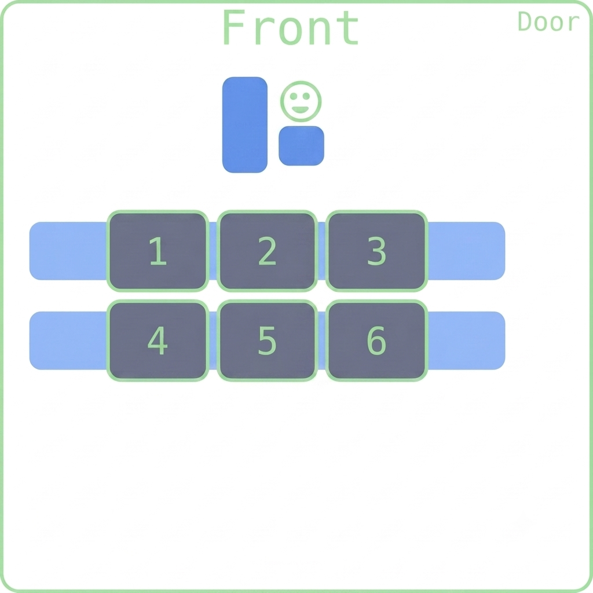
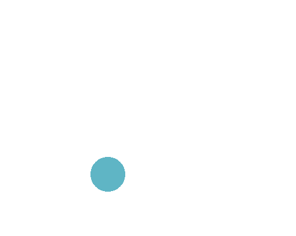
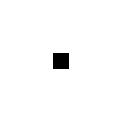
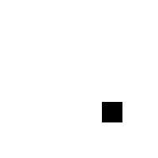
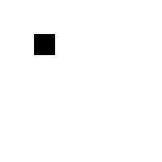
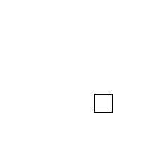

Animations
Fred Agbo
October 7, 2026
Happy to Wednesday!
- Class grouping today: Scan the QR code or go to https://tools.jedrembold.prof/daily
- Class code is
UhT95 - Introduce yourselves! What is your favorite art animation?

Quick Announcements
- Nothing is due today.
- Midterm exam grading was posted
- Average grade was 72%, which is not so bad but needs a lot of improvement in understanding of contents
- Problem Set 4 is due next week Monday at 10 pm
- Don’t forget to attend your session meeting (Today/Tomorrow)
Review
- Recall the Clicky Problem on Monday class?
- Add a black filled background rectangle to the window the same size as the window
- Add a listener so that when the mouse is clicked, the background rectangle changes to a new random color
- Add a while filled circle somewhere near the middle (no need to be exact)
- Add a listener so that when the mouse is double clicked, the circle moves down the screen one diameter’s distance
Line Art
- Suppose we want to make a basic drawing program
- When the user presses the mouse down, we start drawing a line
- As the user drags the mouse around, we actively update the placement of that line to end at the users cursor
- When the user releases the mouse button, we lock that line onto the screen
- Now a new click starts drawing a new line
Fixed Line-Drawing
from pgl import GWindow, GLine
WIDTH = 500
HEIGHT = 500
def draw_lines():
def mousedown_event(e):
x = e.get_x()
y = e.get_y()
gw.line = GLine(x,y,x,y)
gw.add(gw.line)
def drag_action(e):
gw.line.set_end_point(e.get_x(), e.get_y())
gw = GWindow(WIDTH, HEIGHT)
gw.line = None
gw.add_event_listener("mousedown", mousedown_event)
gw.add_event_listener("drag", drag_action)
if __name__ == '__main__':
draw_lines()Timer Events
- Previously we looked at how our programs could react to mouse events
- Can also listen for timer events, which occur after a specific time interval
- You specify the listener for a timer event in the form of a callback function that is invoked at the end of the time interval
- Can add animation to our graphics by creating a timer whose callback
makes small updates to the graphical objects in the window
- If the time interval is short enough (usually sub 30 milliseconds), the animations will appear smooth to the human eye
Timer Types
- PGL supports two kinds of timers:
- A one-shot timer invokes its callback only
once after a specified delay
Created with
gw.set_timeout(function, delay)
- An interval timer invokes its callback function
repeatedly at regular intervals
Created with
gw.set_interval(function, delay)
- In both,
functionis the callback function anddelayis the time interval in milliseconds
- A one-shot timer invokes its callback only
once after a specified delay
- Both methods return a
GTimerobject that identifies the timer, and can be stopped by invoking the.stop()method on that timer
Moving Square
def moving_square():
def step():
square.move(dx, dy)
if square.get_x() > 500:
timer.stop()
gw = GWindow(500, 200)
dx = 1
dy = 0
square = create_filled_rect(12, 100, 24, 24, "red")
gw.add(square)
timer = gw.set_interval(step, 20)Growing Circles

Waiting vs Events
Many would probably try to approach this doing something like as follows:
def growing_circles(): gw = GWindow(WIDTH, HEIGHT) for i in range(NUM_CIRCLES): # Create a new circle # Animate the circle to grow it # Wait for the animation to completeThe problem here is that there is no clear way to “wait” for an animation to complete
- Code you write runs basically instantly or when run by a callback
Instead need an event callback that takes care of both circle creation (when needed) and growing animations
Using Events Wisely
- Need to keep track of what the program should be doing, and then have the timer callback function handle whatever is needed
- Conceptually, for these circles, might look more like this:
def step():
if """ there is a circle still growing """
"""then increase its size """
elif """ a new circle needs to be created """
""" then create one """
else:
timer.stop()Making those circles grow!
from pgl import GWindow, GOval
import random
GWIDTH = 500
GHEIGHT = 400
N_CIRCLES = 20
MIN_RADIUS = 15
MAX_RADIUS = 100
DELTA_TIME = 10
DELTA_SIZE = 1
def random_color():
color = "#"
for i in range(6):
color += random.choice("0123456789ABCDEF")
return color
def create_filled_circle(x, y, r, color="black"):
circ = GOval(x-r, y-r, 2*r, 2*r)
circ.set_filled(True)
circ.set_color(color)
return circ
def growing_circles():
def start_new_circle():
r = random.uniform(MIN_RADIUS, MAX_RADIUS)
x = random.uniform(r, GWIDTH - r)
y = random.uniform(r, GHEIGHT - r)
gw.circle = create_filled_circle(
x, y,
0, random_color()
)
gw.desired_size = 2 * r
gw.current_size = 0
gw.circles_created += 1
return gw.circle
def step():
# Grow a circle if needed
if gw.current_size < gw.desired_size:
gw.current_size += DELTA_SIZE
x = gw.circle.get_x() - DELTA_SIZE / 2
y = gw.circle.get_y() - DELTA_SIZE / 2
gw.circle.set_bounds(
x, y,
gw.current_size,
gw.current_size
)
# or add a circle if you can
elif gw.circles_created < N_CIRCLES:
gw.add(start_new_circle())
# or stop
else:
timer.stop()
gw = GWindow(GWIDTH, GHEIGHT)
gw.circles_created = 0
gw.current_size = 0
gw.desired_size = 0
timer = gw.set_interval(step, DELTA_TIME)
growing_circles()Simulation
- Our technique of piecing together many small movements to resemble motion is not limited to just making pretty animations!
- Physicists use similar techniques to break complex problems into
simple pieces
- “In this small time interval, the motion is simple”
- Chain together many time intervals to construct the full motion
- There are many areas where this is the only way to solve a problem, as we can not write down equations to express the result otherwise!
The Two Body Problem
from pgl import GWindow, GOval, GLine
def two_body():
def create_filled_circle(x, y, r, color="black"):
circ = GOval(x-r, y-r, 2*r, 2*r)
circ.set_filled(True)
circ.set_color(color)
return circ
def step():
# Compute forces and accelerations
dx = planet1.get_x() - planet2.get_x()
dy = planet1.get_y() - planet2.get_y()
r3 = (dx ** 2 + dy ** 2) ** (3 / 2)
ax = 1000 / r3 * dx
ay = 1000 / r3 * dy
# Update velocities
gw.vx1 += -ax
gw.vy1 += -ay
gw.vx2 += ax
gw.vy2 += ay
# Augment history paths
path1 = GLine(
planet1.get_x() + 10,
planet1.get_y() + 10,
planet1.get_x() + 10 + gw.vx1,
planet1.get_y() + 10 + gw.vy1,
)
path1.set_color("red")
path1.set_line_width(3)
path2 = GLine(
planet2.get_x() + 10,
planet2.get_y() + 10,
planet2.get_x() + 10 + gw.vx2,
planet2.get_y() + 10 + gw.vy2,
)
path2.set_color("cyan")
path2.set_line_width(3)
# Move planets
planet1.move(gw.vx1, gw.vy1)
planet2.move(gw.vx2, gw.vy2)
gw.add(path1)
gw.add(path2)
gw = GWindow(600, 600)
# Defining state variables
gw.vx1, gw.vy1 = 0, 1
gw.vx2, gw.vy2 = 0, -1
planet1 = create_filled_circle(200, 200, 10, "red")
planet2 = create_filled_circle(400, 200, 10, "cyan")
gw.add(planet1)
gw.add(planet2)
gw.set_interval(step, 10)
if __name__ == '__main__':
two_body()Group Review Question!
When the function rev_q is called, what
happens when the mouse is clicked in the window?
- The square shrinks
- The square gets filled
- The square shrinks and then gets filled
- The square gets filled and then shrinks
def rev_q():
def act_A(e):
sq.set_filled(True)
def act_B(e):
sq.set_size(
sq.get_width() - 10,
sq.get_height() - 10
)
gw = GWindow(500, 500)
sq = GRect(200, 200, 100, 100)
sq.set_color("blue")
gw.add(sq)
gw.add_event_listener("mousedown", act_B)
gw.add_event_listener("click", act_A)Problem 1: Tracing Understanding
When the function to the right is run, what does the screen look like just after 1 second has passed?




def mystery():
def enigma():
rect.move(1, 1)
def puzzle():
rect.set_filled(True)
gw = GWindow(200, 200)
rect = GRect(0, 0, 25, 25)
gw.add(rect)
gw.set_interval(enigma, 20)
gw.set_timeout(puzzle, 1000)Problem 2: The Setup
- This is a coding problem, work in pairs or trios on a single computer
- In
SquareFun.py, I’ve drawn an initial box for you - Your task is cause the square to move horizontally across the screen such that it takes exactly 5 seconds to cross entirely
Problem 2b: The Growth
- Switch who is typing!
- Now, we want the box to also increase in size as it moves across the screen
- Until it reaches a size of 100 pixels, then it stops growing (but keeps moving)
Problem 2c: Symmetric Growth
- Switch who is typing!
- The box grows from the top left corner atm, which looks weird
- Add logic to also adjust the position of the box so that it seems to grow from the center
Problem 2d: Target Time!
- Switch who is typing!
- I’ve provided you a function that “throws a dart” to a specified position
- Add a timeout so that the dart is thrown when it would strike the center of the box
Problem 2e: Moving the Dart
- Switch who is typing!
- Even if the dart hits the box, the box moves out from under it currently, which looks weird
- Add logic so that the dart is moved along with the box once it hits the board
- This will likely require accessing the same dart object in multiple callback functions, one of which assigns it. How can you manage this?